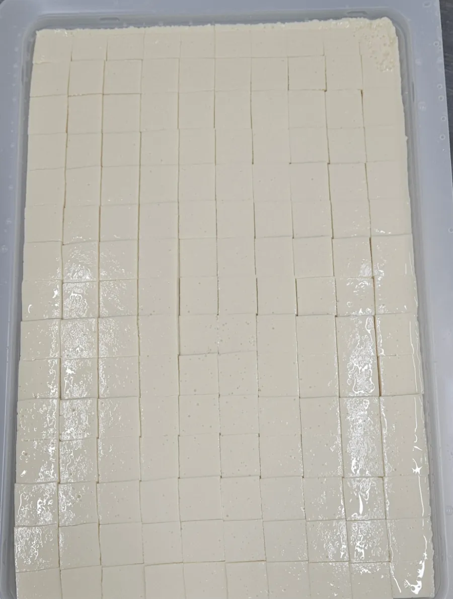
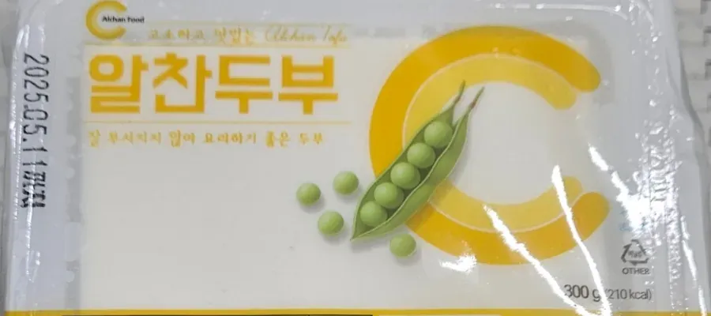
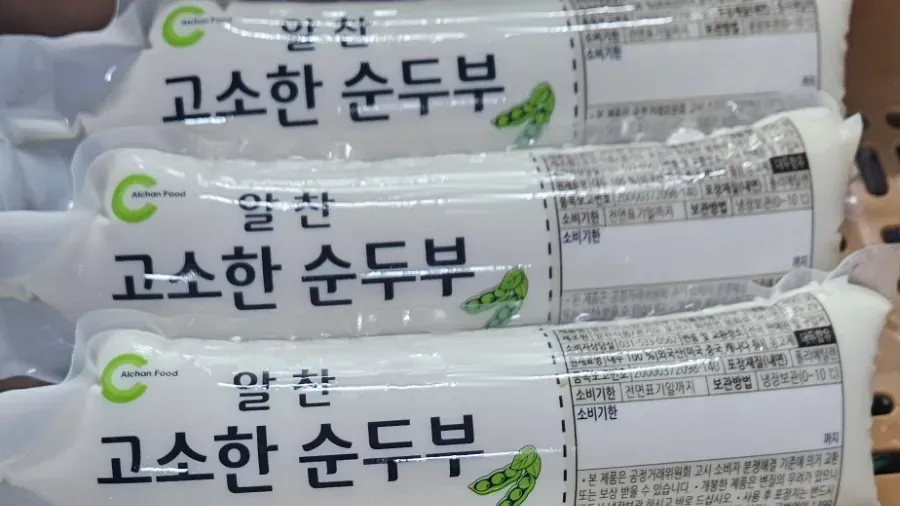
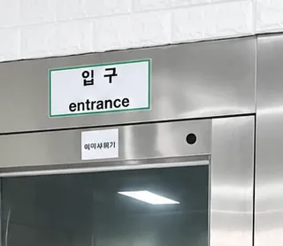
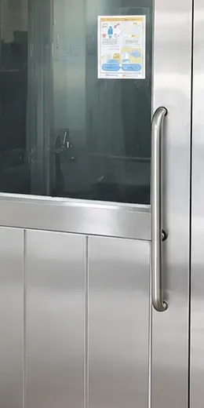

사진 준비 중농축 설비나 굳힌 두부 사진
콩물을 농축해서 굳힙니다
보통 두부는 불린 콩을 갈아 끓인 뒤, 엉긴 콩물을 보자기에 싸서 눌러 물을 뺍니다. 알찬식품은 콩을 불리지 않고 갈며, 누르는 대신 콩물을 농축해 틀에서 굳힌 뒤 자릅니다.
만드는 방법 보기보통 두부는 불린 콩을 갈아 끓인 뒤, 엉긴 콩물을 보자기에 싸서 눌러 물을 뺍니다. 알찬식품은 콩을 불리지 않고 갈며, 누르는 대신 콩물을 농축해 틀에서 굳힌 뒤 자릅니다.
만드는 방법 보기두부는 대부분 물입니다. 알찬식품은 1급수 지하수로 두부를 만듭니다.

마파용은 300조각, 부침용은 70조각, 큐브는 약 522조각으로 잘라 담습니다.

잘 부서지지 않아 요리하기 좋은 두부입니다.

수입콩 제품과 국산콩 100% 제품이 있습니다.
다른 브랜드의 두부를 알찬식품 생산실에서 만듭니다.
OEM 생산 보기생산실 입구에는 자동 손소독기와 에어샤워기가 있습니다.

